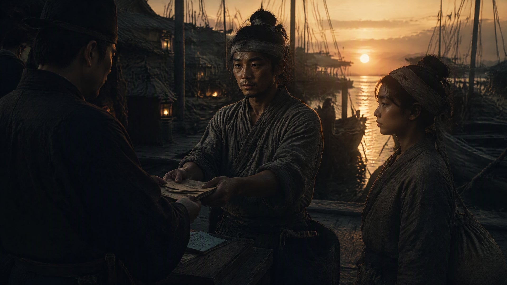

急流勇退

火焱回到百曲那年，做了一件让所有人都看不懂的事——他把自己半辈子的家当，一件一件地往外送。
先是海路。火家的船队，九条大船，他留了一条最小的当渔船，其余八条，连同船坞、泊位、航线，原原本本交给了朝廷的漕运司。漕运司的人来接收那天，看着那八条擦得锃亮的海船，愣了半天，问了一句：“火大使，您这是……”
“火家往后不跑海了。”火焱说，“这些船，是朝廷的船。火家只留一条，下河捞个鱼，够过日子。”
再是军器司。那面“火锻百炼”的铜符，火焱亲手擦了三遍，用一块红布包了，交还给应天府来的差官。十八连炉的铁匠铺，他只留了三座，只打农具——犁头、锄头、镰刀、锅铲。打了一辈子箭头的老师傅们，火焱给他们一人分了十亩田，让他们回家种地。“火家的箭头，往后用不上了。可火家的犁头，还能用一百年。”
最后是灶火号。那座开了二十多年的商号，盐、布、铁，火焱一样一样地清盘。盐引退给了盐课司，织坊盘给了乌泥泾的老匠人，铁器铺留给了火锻寨的老伙计。灶火号的招牌摘下来那天，海妹站在门口，哭得不成样子。
“二十多年了，”她说，“从你九岁那年，到如今。这招牌，说摘就摘了？”
“摘了。”火焱说，“招牌摘了，火家还是火家。灶还在，人还在，比什么招牌都强。”
他把灶台砖下的旧物，一件一件取出来。黑弓，挂回了火家老屋的正墙，弓弦松了，不再绷紧；直脱儿的玉印，收进了一只樟木匣子，匣子上落了锁；海图，卷起来，用油布裹了三层，压进了灶台砖的最底层；那本北元册子，早在应天府就呈给了朱元璋；帖先生的半份军饷，火焱兑成了铜钱，分给了百曲最穷的几户人家。
最后剩下来的，是那把没有弦的旧弓（赤老温从泉州带回来的），那块刻着“归家”的封坛旧砖，和那块炉心石。这三样，火焱没有收起来。他把它们摆在火家老屋的供桌上，跟直脱儿的牌位放在一起。
“这些，是火家的根。”他对围在身边的儿孙们说，“弓是老祖宗的，砖是老祖宗的，石头也是老祖宗的。往后，逢年过节，你们就来给老祖宗上炷香。火家的火，是从这三样东西里烧出来的。”
那一年冬天，赤伯升病了。
不是急病，是老病。一个守了一辈子灶的老人，身子像一口烧尽了柴的老灶，慢慢地，凉了下来。他躺在火家老屋的炕上，隔着窗子，正好能看见义学的院子。孩子们还在念书，念的是《千字文》，“天地玄黄，宇宙洪荒”。
“焱儿，”赤伯升的声音很轻，像风箱漏了气，“你过来。”
火焱蹲到炕边，握住父亲的手。那双手，粗糙得像老树皮，指节上全是烫伤和冻疮的疤——那是几十年拉风箱、添柴火、淬铁器留下的。
“爹这一辈子，”赤伯升说，“没做过什么大事。就守着一口灶，把你拉扯大。”他顿了顿，浑浊的眼睛望着窗外的义学，“可爹觉得，值了。你看，火家的孩子，都能读书了。”
“值。”火焱说，声音有点哑，“爹，您好好养着，开春就好了。”
“别哄我。”赤伯升笑了笑，笑得很轻，“爹知道自己的身子。爹就是……想再看一眼那口灶。”
火焱把父亲背起来，背到火家老屋的灶房。那口烧了三十年的灶，炉膛里的火还跳着。赤伯升靠在灶边，看着那团火，看了很久。火光映在他脸上，把他满头的白发都映成了暖黄色。
“焱儿，”他忽然说，“你九岁那年，在松江城，指着灶膛说'姓火'。爹那时候就想——这孩子，胆子真大。”他笑了笑，“后来爹才知道，你不是胆子大。你是早就知道，火家的火，能烧出一条活路来。”
“爹……”
“别哭。”赤伯升说，“灶王爷在上，火家没绝。爹能看见你成家立业，能看见火家退下来，能看见孩子们读书——爹这一辈子，圆满了。”
他说完，眼睛还望着那团灶火，手却慢慢地、慢慢地松开了。
火焱跪在灶前，把父亲已经凉了的手，轻轻放进自己怀里暖着。灶膛里的火，赤红赤红地跳着，映着这对父子最后的一面。
赤伯升走的那天，百曲下了一场大雪。火焱把他葬在村东头的滩头，跟陈老爹的坟挨着。墓碑上，火焱亲手刻了八个字：
一个守灶的人。
他想起父亲生前最爱说的话——“焱儿，你在外面跑海跑江，爹守着这口灶。”
如今，跑海跑江的人回来了，守灶的人，却先走了。
火焱在坟前站了很久。雪落在他肩上，落在他斑白的鬓角上。他没有哭。他只是把火家老屋那口灶的火，烧得比往常更旺了些。
“爹，”他轻声说，“火家往后，就只在百曲了。种田，读书，烧灶。您放心，火，火家守着，不会灭。”
那年之后，百曲的人常说，火家老屋的灶火，是全村烧得最旺、也最稳的。
因为那口灶，是一个守了一辈子灶的老人，用命添的最后一把柴。
· 第五卷《祖境》 ·